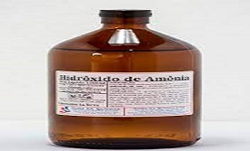

Conheça nossa empresa !
Nossa empresa foi criada com o objetivo de salvar o meio ambiente por meio da despoluição de rios, acreditamos que por meio desse método conseguiremos reaver a vida marítima em rios e lagos que anteriormente não se acreditava ser possível existir vida, trazendo alegria e esperança novamente.
Conheça nossas melhores qualidades !
-
Agilidade nos processos
Executamos todas as tarefas de análise e execução da limpeza dos rios e lagos em tempo recorde.
-
Qualidade garantida
Utilizamos das melhores máquinas, profissionas e produtos e por isso somos os melhores do mercado disparadamente.
-
Constante evolução
Estamos sempre nos atualizando para cada vez melhor conseguir atender nosso cliente da melhor forma possível.
Conheça nossos Serviços !
-
Flotação
Essa técnica faz a separação físico-química da sujeira a partir de substâncias despejadas na água, como polieletrólito e sulfato de alumínio. Essas substâncias têm efeito coagulante, fazendo com que as partículas sólidas flutuem. Um equipamento injeta oxigênio no fundo do rio para que os fragmentos não afundem. Desidrata-se parte do lodo, que é devolvido à natureza.
-
Dragagem
Uma embarcação equipada com bombas de sucção faz a retirada de camadas de sujeita, acabando com as “placas” que ficam depositadas no fundo do rio. O material, então, é recolhido e transportado, por meio de tubulações, para um aterro localizado próximo à margem.Normalmente realizada para grandes rios.
-
Gradeamento
É uma técnica utilizada tanto em rios quanto em estações de tratamento. Nela, grades de metal são inseridas na parte rasa do rio, retendo materiais grosseiros, como os papéis, as garrafas plásticas e os pedaços de vidro que são levados com a chuva. As grades, com um interceptor, abrem e fecham conforme as características físicas dos objetos que precisam ser encarcerados. Depois, o material é jogado em uma caçamba de lixo.
-
Técnicas nucleares
As técnicas nucleares são usadas em reservatórios e lagoas.um radioisótopo pode ser utilizado para fazer o mapeamento do trajeto e da quantidade de poluentes presentes na terra e na água. A radiação que é emitida pelo átomo radioativo acaba penetrando nos materiais, tornando-os facilmente detectáveis por dispositivos especiais, mesmo em números bem pequenos.
-
Técnicas ecológicas
Esse tratamento de água ecológico é de fácil implantação em canais, rios e lagos que estão contaminados. Essa técnica processa a recuperação e também transforma todo o entorno do curso, comunidade e meio físico. O sistema consiste na instalação de jardins que flutuam, ou seja, ilhas artificiais de 110 m², que são cobertas por plantas aquáticas que filtram os poluentes sem o uso de produtos químicos.
Conheça alguns dos nossos clientes !
-

Tentacool
-

Induce Media
-
Promoticus
Conheça nossos produtos à venda!
-
Sulfato de alumínio
- 
Hidróxido de amônia
-
Carbonato de sódio
-
Carbonato de cálcio
-
Carvão ativado